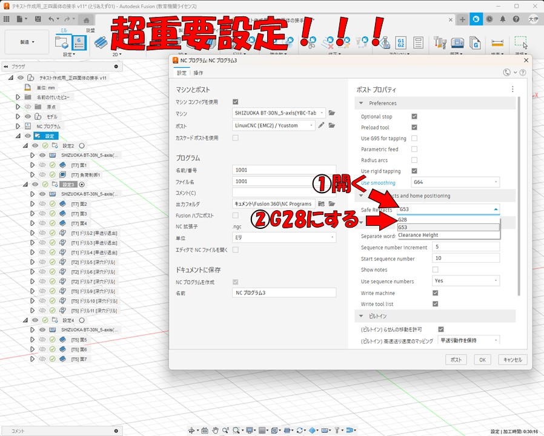
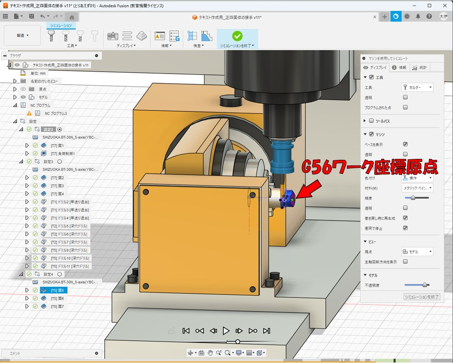
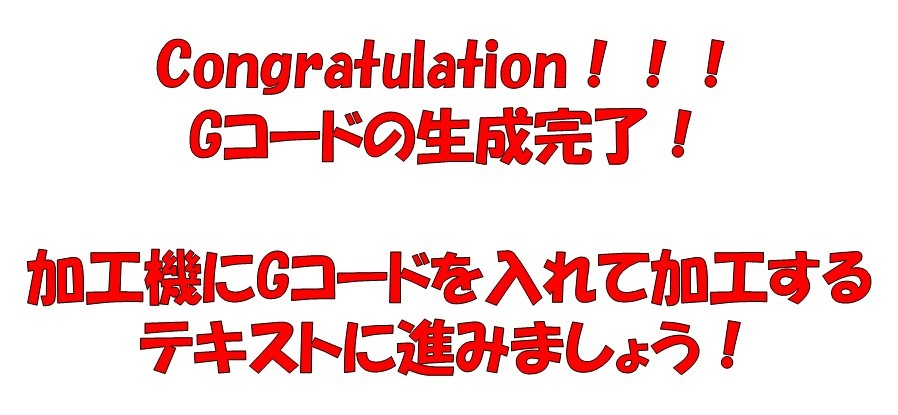

FusionCAMの使い方
加工シミュレーション
Gコードの生成
（正四面体の接手での例）
テキストトップページはこちら
FusionCAD/CAM＆５軸MCテキストトップページ
前回のテキストはこちら
05 FusionCAMの使い方 ツールパスの作成
目次
このテキストではCADでの部品のモデリングとCAMでのツールパスの作成が完了した後の、
Fusionでの作業について説明していきます。
加工シミュレーション
ツールパスの作成が終わったら、作成したツールパスでうまく加工ができるのか確認するため、
加工のシミュレーションをしてみましょう。シミュレーションで確認をせずに
いきなり加工機で加工をするのは危険です。絶対にやめましょう。
シミュレーションを開始するには、上のツールバーのアクションの所にある「マシンを使用して
シミュレート」ボタンをクリックしてください。
ボタンを押すとこのように、ツールパスの作成のときに選択した加工機の3Dモデルが
画面に出現し、様々な操作ボタンが出てきます。
このシミュレーション画面で、よく使うボタンや項目について説明していきます。
まず画面下中央の再生ボタンをクリックするとシミュレーションが開始します。
作成したツールパスに従って、加工機が動き、材料が削られていきます。楽しいですね！！！
再生ボタンの下の小さな丸いツマミを右にドラッグするとシミュレーションの再生速度が速く、
左にドラッグするとゆっくりになります。

画面の一番下に、現在の再生位置を示すバーがあります。
Youtubeの動画を開いたときに表示されるシークバーみたいなものです。
ここをドラッグするとシミュレーションの再生位置を移動できます。
画像のように、工具と削られていく材料と工具の先端の軌跡（ツールパス）が表示されます。
画面の右側に出現するメニューのウインドウについても説明します。
画像のように、工具、ツールパス、加工機、削られる材料をそれぞれ表示するのか、
またどのように表示するのかをいろいろと変更できます。
自分でいろいろと変更してみて、自分がシミュレーションを見やすいように変えてみてください。
右のウインドウのストックの所の「巻き戻し時に再生成」にはチェックを入れることを推奨します。
またその下の「衝突で停止」にチェックを入れると、工具がチャックや加工機のボディに衝突してしまったときに
シミュレーションが停止するようになります。
右ウインドウのビューの「視点」を切り替えると、シミュレーションを再生したときの視点（カメラ）の位置が
どこに追従するのかを変更することができます。
この加工機の加工可能領域を越えた加工をしようとしていたり、材料の取り付け位置が悪かったり、
ツールパスの設定をミスしていたりすると、工具やホルダーがチャックなどに衝突することがあります。
シミュレーション中にこのような当たってはいけない部分が衝突すると、それを警告するために
衝突した部品が赤く光ります。衝突している様子の例の画像を下に２枚示します。
ここで１つ注意点なのですが、材料を傾けて加工する際に正面から見て左に傾くことがないか確認してください。
この５軸MCは左に傾く可動域が少なく、20度程度しか傾きません。
もし左に傾く場合は、加工機の可動域の設定か、ツールパスの作成時の設定に誤りがある可能性があります。
加工中に衝突がないかなど安全が確認できたら「シミュレーションを終了」ボタンでシミュレーションを終了してください。
Gコードの生成
シミュレーションで加工が安全に上手くいくか確認出来たら、５軸MCを動かして実際に加工をするための
制御プログラム、「Gコード」を生成します。
画面左のツリーから一番上の「設定」をクリックして青く選択してから、「NCプログラム」ボタンをクリックしてください。
NCプログラムの設定のウインドウが開きます。ポストプロセッサを配布したものに設定していきます。
「ポスト」と書かれた右のフォルダのマークをクリックしてください。
ポストライブラリのウインドウが開くので、ローカルをクリックして移動して、インポートボタンをクリックしてください。
そうすると、エクスプローラーのウインドウが開くので、配布した「Ycustom」という名前の
ポストプロセッサファイルをダブルクリックして選択してください。
ポストライブラリのウインドウの、ローカルの場所に今選択したYcusotom.cpsが追加されるので、
これをダブルクリックしてください。
プログラムの「名前/番号」には他のGコードのファイルと被らないような、適当な４桁の番号を入力してください。
出力フォルダのフォルダのマークをクリックして、Gコードを出力する場所を設定できます。適当にデスクトップなどに
しておいてください。
この設定は非常に重要です！！！
「Use smoothing」の項目を、「G64」に切り替えてください。
ここが「G64 with PQ」のままだと、加工時に加工機がエラーを吐いて止まります。
これも重要な設定です！！！
「Safe Retracts」の項目を、「G28」に切り替えてください。
ここが「G53」のままだと、工具交換の際にエラーを吐いて止まってしまいます。

「Use sequence numbers」をNoにしてください。
「Write machine」と「Write tool list」のチェックを外してください。
これでOKです。「ポスト」ボタンを押すとGコードが生成されます！ついにこの時がやってきました。
画像のようなメッセージが出てくれば成功です！
ワーク座標原点の座標の計算
今回の加工では、G54、G55、G56の３つのワーク座標原点を使用しています。
１つ目の設定ではG54、２つ目の設定ではG55、３つ目の設定ではG56を使用していて、
G54は材料の傾きが0度のときの原点、G55は材料の傾きが穴の角度のときの原点、
Ｇ56は90度傾けたときの原点としています。
５軸MCを使う際は、このように材料の角度ごとにワーク座標原点を変えます。
下の図に示すように、材料の位置と角度を基準とするとワーク座標原点は常に材料の上面の中央ですが、
加工機を基準に見ると３つのワーク座標原点は異なる座標に位置しています。

ワーク座標原点を使用した加工をするためには、機械原点から見た各ワーク座標原点の座標を
加工機に入力する必要があります。
ワーク座標原点の座標を求める方法はいくつかありますが、Fusionで
ファイルを新規作成して、下の画像のようなスケッチを描いて適当に押し出して計測するのが最も簡単です。
まず、今回、G54ワーク座標原点は機械原点よりZ座標を6mm下げた位置にします。つまり
G54の座標は（X=0,Y=0,Z=-6.000,B=0,C=0）にします。下の画像で、機械原点の6mm下がG54になっていると思います。
機械原点から加工機のＢ軸の回転軸までの距離は、2024年10月に測定した時は129.956mmだったのでとりあえずその値が正しいとします。
この値は加工機の状態によって微妙に変わるので定期的に測定することを推奨します。
このように寸法を決めると、下のような図が描けます。

図を適当に押し出して、さっきのG55とG56の座標が、機械原点からX軸方向とZ軸方向に何mm離れているのか計測して、メモを取ってください。
生成したGコードを何らかのテキストエディタで開いて、プログラムの最初にコメントで、
何を削るプログラムなのかわかるコメントと、各ワーク座標原点の座標を書いておいてください。後で使います。
Gコードは（）でコメントアウトできます。日本語は文字化けするので英語にしてください。
お疲れさまでした！これで５軸MCに入れる制御プログラムGコードの生成が完了しました！
GコードのファイルはUSBメモリに入れてください。
次のテキストに進んでこのGコードを加工機に入れて加工してみましょう！

次回のテキストはこちら
07 ５軸MCの使い方 実際の加工手順